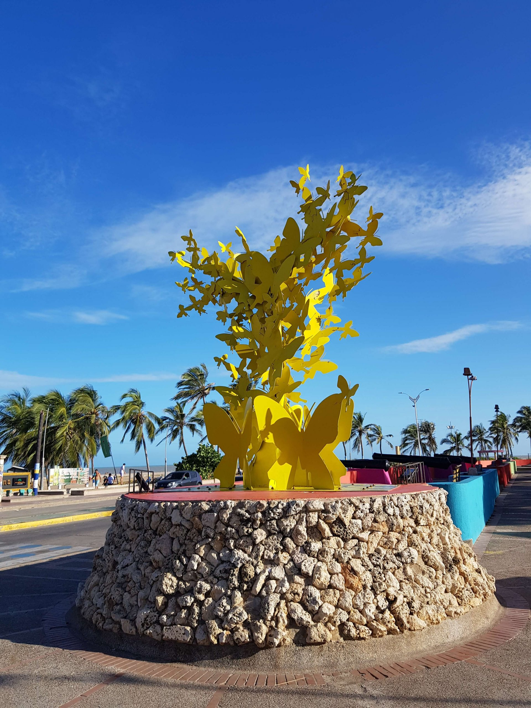
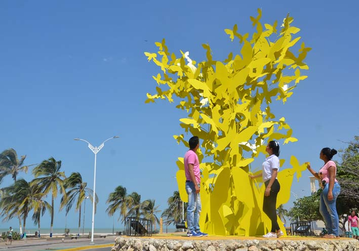
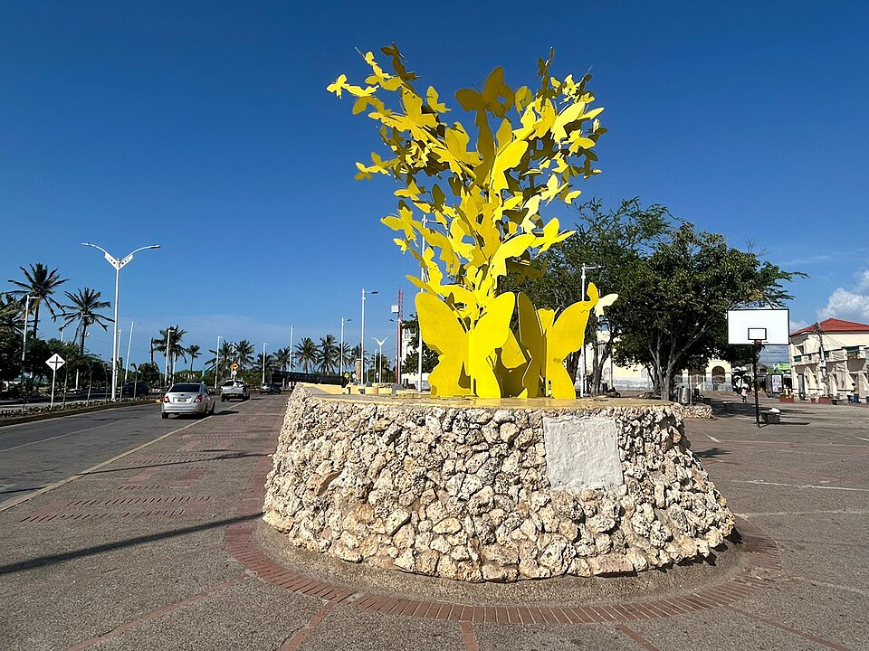
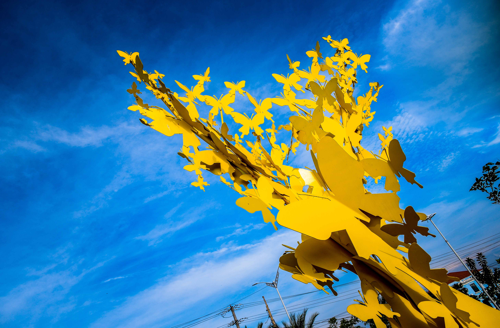

Mariposas Amarillas de Mauricio Babilonia
Monumento cultural · Riohacha, La Guajira
Homenaje a Gabriel García Márquez🎙️ Escucha el resumen del monumento
Narración en audio · 1 min aprox.
📷 Galería fotográfica





Monumento Mariposas Amarillas · Riohacha, La Guajira, Colombia
Autora
Johana Cerchar Henao
Inauguración
2016 — Hay Festival
Ubicación
Parque Los Cañones, Riohacha
Apoyo institucional
Gobernación de La Guajira · Cerrejón
🌟 Sobre el monumento
Un símbolo del realismo mágico
El Monumento Mariposas Amarillas es uno de los referentes culturales y turísticos más representativos de la ciudad de Riohacha, capital del departamento de La Guajira. Esta obra artística está inspirada en las famosas mariposas amarillas descritas en Cien años de soledad, una de las obras más importantes de la literatura latinoamericana, escrita por Gabriel García Márquez.
Conexión con la novela
Las mariposas amarillas son reconocidas mundialmente como un símbolo del realismo mágico, corriente literaria que combina elementos fantásticos con situaciones de la vida cotidiana. En la novela, estas mariposas acompañan constantemente al personaje Mauricio Babilonia, convirtiéndose en una imagen inolvidable para millones de lectores alrededor del mundo.
Atractivo turístico
Ubicado en una de las zonas más visitadas de la ciudad, el monumento atrae diariamente a residentes y turistas nacionales e internacionales que desean conocer más sobre la cultura colombiana. Su diseño llamativo y colorido lo convierte en un punto de referencia dentro de los recorridos turísticos de la capital guajira.
📖 Reseña histórica
La obra surgió del imaginario de la artista Johana Cerchar desde su infancia, cuando escuchaba la canción "Vallenato Nobel" de Poncho Zuleta — amigo de su padre — que aludía a las mariposas amarillas del personaje Mauricio Babilonia en Cien años de soledad.
La escultura fue concebida como homenaje al Nobel colombiano Gabriel García Márquez y a la profunda conexión de su obra con La Guajira, donde los padres de Gabo vivieron su luna de miel. Fue inaugurada en Riohacha en 2016, en el marco del Hay Festival, impulsando el turismo literario en la región.
"Es Riohacha donde deben estar las Mariposas Amarillas de Mauricio Babilonia, porque es la cimiente de carne y de sangre de su linaje materno."
— Johana Cerchar Henao, autora
🕐 Línea de tiempo
1967
Publicación de Cien años de soledad por Gabriel García Márquez, donde aparece el personaje Mauricio Babilonia rodeado de mariposas amarillas.
2014
Fallece Gabriel García Márquez. Su legado literario impulsa proyectos culturales en todo Colombia, especialmente en La Guajira.
2016
Johana Cerchar Henao inaugura el monumento en el marco del Hay Festival de Riohacha, con apoyo de la Gobernación de La Guajira y Cerrejón.
Hoy
Es uno de los lugares más fotografiados de la ciudad y punto de inicio de la Ruta Gabo en Riohacha, un recorrido turístico literario.
✨ Significado cultural
Las mariposas amarillas son uno de los símbolos más reconocibles del realismo mágico de García Márquez: en Cien años de soledad acompañan siempre al personaje Mauricio Babilonia. El monumento conecta este universo literario con el territorio guajiro.
En la cosmovisión Wayuu, las mariposas amarillas representan el último peregrinaje de las mujeres fallecidas sobre la tierra, otorgando al monumento un doble significado: literario e indígena.
Además de su valor artístico, el monumento representa la unión entre la literatura, la cultura y la identidad caribeña. La obra busca promover el conocimiento de las expresiones culturales colombianas y fortalecer el sentido de pertenencia de la comunidad hacia su patrimonio.
Toca un tema para saber más 👇
🌎 Importancia para Riohacha y La Guajira
El monumento es el punto de inicio oficial de la Ruta Gabo en Riohacha, un recorrido turístico que une los lugares relacionados con la vida y obra de García Márquez en la ciudad.
Es un referente del patrimonio cultural local y símbolo de orgullo para La Guajira. Aparece frecuentemente en desfiles y celebraciones del aniversario de Riohacha, y la Alcaldía lo promueve como principal atractivo cultural y turístico de la ciudad.
También contribuye al desarrollo del turismo cultural, permitiendo que visitantes de diferentes regiones y países conozcan aspectos importantes de la historia y las tradiciones colombianas. Se ha convertido en un escenario frecuente para actividades culturales, encuentros comunitarios y eventos turísticos que fortalecen la imagen de Riohacha como destino atractivo en la región Caribe.
📍 Ubicación
Parque Nicolás de Federmán · Avenida Primera, Riohacha, La Guajira.
📍 Ver en Google Maps →